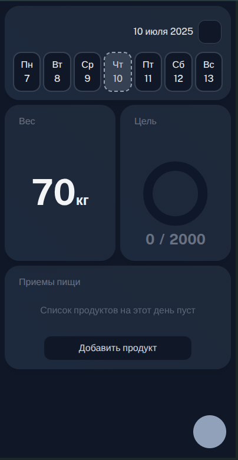
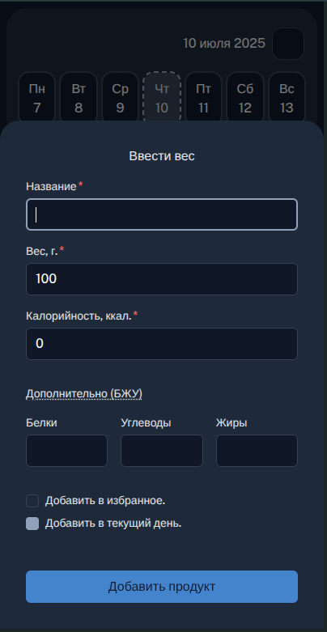
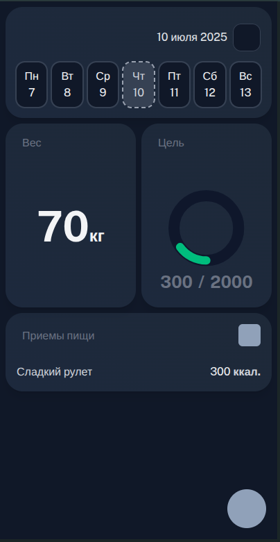

Простое и интуитивное приложение с минималистичным вводом еды, рецептов и контролем прогресса
Попробовать прямо сейчас


Добавляйте продукты и блюда без лишних шагов
Сохраняйте свои любимые рецепты, чтобы использовать снова
Минималистичный прогресс без перегрузки цифрами
Бесплатно. Без регистрации. Прямо в браузере.